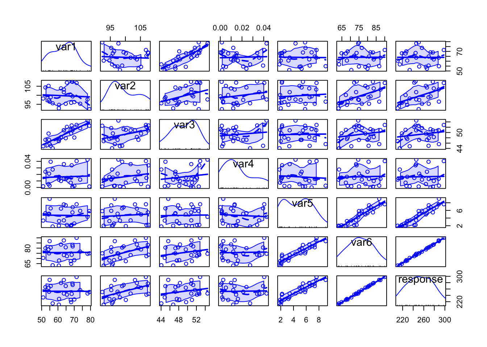
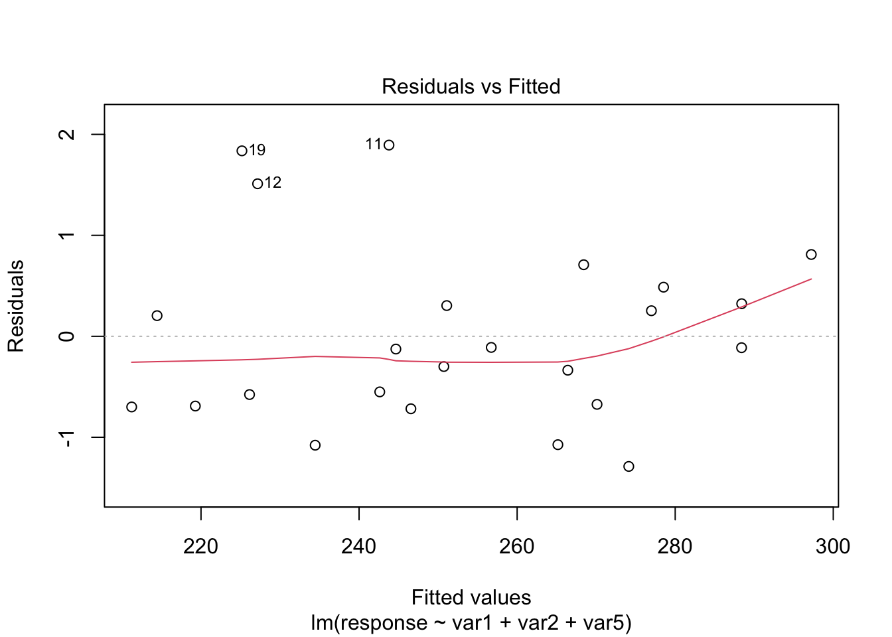
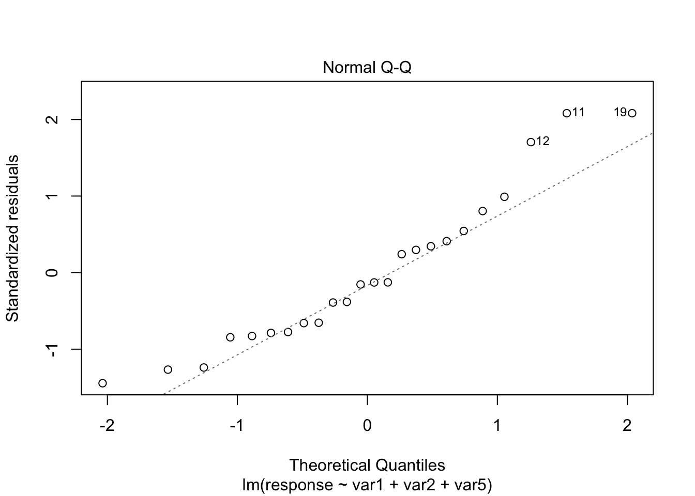

Case Study 05
André Victor Ribeiro Amaral
Objectives
In this case study, we will fit a multiple linear regression model. However, different than before, we will work with more variables. To do so, we will check for correlation among covariates, see how to perform variable selection, fit a model, check the assumptions, interpret it, and predict (and plot) new values based on this fitted model. When in higher dimension, visualization is difficult (and unnecessary for most cases).
1 Introduction
For this problem, we will analyse a data set with 6 variable (1 response variable + 6 covariates). Although their meaning may not be stated, we will see how important feature selection is when performing multiple regression analysis. You can download the .csv file here. The data set contains the following variables:
var1(quantitative)var2(quantitative)var3(quantitative)var4(quantitative)var5(quantitative)var6(quantitative)response(quantitative)
2 Exploring the data set
In order to explore the data set and perform initial analyses, we have to read it (with R) first. Provided that the .csv file is saved within the datasets/ folder, one can read the file in the following way.
col.names <- c('var1', 'var2', 'var3', 'var4', 'var5', 'var6', 'response')
data <- read.csv(file = 'datasets/data.csv', header = FALSE, sep = ',', col.names = col.names)
head(data, 5)## var1 var2 var3 var4 var5 var6 response
## 1 68.10730 95.83754 49.66851 0.015061421 2.090953 64.83720 218.5916
## 2 78.18420 97.69040 54.51643 0.042649961 4.320810 74.54103 245.8415
## 3 54.24527 105.20130 49.59829 0.005194938 4.948731 78.74680 264.0839
## 4 54.56271 97.41171 47.21550 0.021132252 5.127075 74.95861 251.3954
## 5 56.75478 95.57443 44.05604 0.027485738 1.801114 63.39468 214.6450Now, let’s see a summary of our data.
summary(data)## var1 var2 var3 var4
## Min. :50.94 Min. : 92.32 Min. :44.06 Min. :0.0001482
## 1st Qu.:56.45 1st Qu.: 95.77 1st Qu.:47.24 1st Qu.:0.0045800
## Median :64.21 Median : 98.57 Median :49.63 Median :0.0131564
## Mean :63.96 Mean : 99.73 Mean :49.29 Mean :0.0163943
## 3rd Qu.:68.94 3rd Qu.:103.94 3rd Qu.:51.37 3rd Qu.:0.0249283
## Max. :79.30 Max. :107.66 Max. :54.52 Max. :0.0426500
## var5 var6 response
## Min. :1.801 Min. :63.08 Min. :210.5
## 1st Qu.:2.486 1st Qu.:69.98 1st Qu.:232.2
## Median :5.038 Median :74.97 Median :250.9
## Mean :4.709 Mean :75.77 Mean :252.8
## 3rd Qu.:6.493 3rd Qu.:81.05 3rd Qu.:270.3
## Max. :9.055 Max. :90.00 Max. :298.0There are no missing values so that we can jump in into the exploratory analyses. However, since we want to use most information from this data set, it is not easy to visualize how strength can be written as a function of more than two variables at the same time. But it might be useful to see how variables are correlated. To do this, we can use the scatterplotMatrix() function from the car package, and the corrplot.mixed() function from the corrplot package.
library('car')
scatterplotMatrix(data)
Specially when there are too many variables or too many data points per plot, it might be difficult to analyse all the details, but from the above plot we can have a rough idea on how each variable can be written as a function of others.
library('corrplot')
corrplot.mixed(cor(data))
However, from the above plot we may have clearer information about the correlation between pair of variables. For instance, var1 and var3 are highly correlated, as well as var5 and var6, var5 and response, and var6 and response. This information can help us having an idea on which attributes better explain the dependent variable.
3 Fitting a model
Our very first task will be fitting a model with all variables so that we can try to explain how the response variable relates to the covariates. We can do this in the following way.
model <- lm(formula = response ~ ., data = data)
summary(model)##
## Call:
## lm(formula = response ~ ., data = data)
##
## Residuals:
## Min 1Q Median 3Q Max
## -1.29614 -0.41203 -0.05714 0.32644 1.68448
##
## Coefficients:
## Estimate Std. Error t value Pr(>|t|)
## (Intercept) -0.01567 4.31348 -0.004 0.9971
## var1 0.16437 0.05915 2.779 0.0129 *
## var2 1.65363 0.25551 6.472 5.74e-06 ***
## var3 -0.24772 0.15677 -1.580 0.1325
## var4 15.25598 13.40879 1.138 0.2710
## var5 7.85702 1.19346 6.583 4.65e-06 ***
## var6 0.69112 0.38603 1.790 0.0912 .
## ---
## Signif. codes: 0 '***' 0.001 '**' 0.01 '*' 0.05 '.' 0.1 ' ' 1
##
## Residual standard error: 0.8177 on 17 degrees of freedom
## Multiple R-squared: 0.9992, Adjusted R-squared: 0.9989
## F-statistic: 3540 on 6 and 17 DF, p-value: < 2.2e-16From the above summary table, we may see two covariates that might not be significant, namely var3, var4, and var6. As we prefer simpler models over more complex models, provided they have the same performance, let’s remove the one with the highest p-value first (var4). We can do this using the update() function.
model2 <- update(model, ~. - var4)
summary(model2)##
## Call:
## lm(formula = response ~ var1 + var2 + var3 + var5 + var6, data = data)
##
## Residuals:
## Min 1Q Median 3Q Max
## -1.56817 -0.37178 -0.02967 0.30375 1.88355
##
## Coefficients:
## Estimate Std. Error t value Pr(>|t|)
## (Intercept) -0.23242 4.34438 -0.053 0.9579
## var1 0.15298 0.05877 2.603 0.0180 *
## var2 1.57953 0.24908 6.341 5.64e-06 ***
## var3 -0.22602 0.15687 -1.441 0.1668
## var5 7.46733 1.15258 6.479 4.29e-06 ***
## var6 0.81454 0.37349 2.181 0.0427 *
## ---
## Signif. codes: 0 '***' 0.001 '**' 0.01 '*' 0.05 '.' 0.1 ' ' 1
##
## Residual standard error: 0.8244 on 18 degrees of freedom
## Multiple R-squared: 0.9991, Adjusted R-squared: 0.9989
## F-statistic: 4179 on 5 and 18 DF, p-value: < 2.2e-16Now, let’s remove coarse_aggregate.
model3 <- update(model2, ~. - var3)
summary(model3)##
## Call:
## lm(formula = response ~ var1 + var2 + var5 + var6, data = data)
##
## Residuals:
## Min 1Q Median 3Q Max
## -1.6041 -0.4214 -0.0859 0.4792 1.5974
##
## Coefficients:
## Estimate Std. Error t value Pr(>|t|)
## (Intercept) -0.78392 4.44833 -0.176 0.8620
## var1 0.07899 0.02937 2.690 0.0145 *
## var2 1.46614 0.24293 6.035 8.33e-06 ***
## var5 7.19347 1.16854 6.156 6.46e-06 ***
## var6 0.90352 0.37864 2.386 0.0276 *
## ---
## Signif. codes: 0 '***' 0.001 '**' 0.01 '*' 0.05 '.' 0.1 ' ' 1
##
## Residual standard error: 0.8474 on 19 degrees of freedom
## Multiple R-squared: 0.999, Adjusted R-squared: 0.9988
## F-statistic: 4944 on 4 and 19 DF, p-value: < 2.2e-16Although var6 has a p-value of 0.0276 and we already know that it is highly correlated with var5, let’s keep it for now. However, in order to have sufficiently simpler models, we can also compute and analyse the Variance Inflation Factor (VIF), which is a measure of the amount of multicollinearity in a set of multiple regression variables. According to this page the VIF for a regression model variable is equal to the ratio of the overall model variance to the variance of a model that includes only that single independent variable. This ratio is calculated for each independent variable. A high VIF indicates that the associated independent variable is highly collinear with the other variables in the model. Also, as a rule of thumb, we can exclude variables with VIF greater than 2, provided we do this for one variable at a time. To do this, we can use the vif() function from the car package.
vif(model3)## var1 var2 var5 var6
## 1.740913 44.823922 211.048276 271.824355As we expected, var6 can be excluded from our model.
model4 <- update(model3, ~. - var6)
vif(model4)## var1 var2 var5
## 1.004377 1.012391 1.008489summary(model4)##
## Call:
## lm(formula = response ~ var1 + var2 + var5, data = data)
##
## Residuals:
## Min 1Q Median 3Q Max
## -1.2887 -0.6780 -0.1195 0.3639 1.8939
##
## Coefficients:
## Estimate Std. Error t value Pr(>|t|)
## (Intercept) -5.49457 4.42946 -1.240 0.229
## var1 0.12457 0.02479 5.026 6.48e-05 ***
## var2 2.03923 0.04057 50.268 < 2e-16 ***
## var5 9.97519 0.08976 111.135 < 2e-16 ***
## ---
## Signif. codes: 0 '***' 0.001 '**' 0.01 '*' 0.05 '.' 0.1 ' ' 1
##
## Residual standard error: 0.9416 on 20 degrees of freedom
## Multiple R-squared: 0.9988, Adjusted R-squared: 0.9986
## F-statistic: 5337 on 3 and 20 DF, p-value: < 2.2e-16Alternatively, we can do this model selection procedure according to another criteria, namely Akaike Information Criterion (AIC), which is used for evaluating how well a model fits the data it was generated from. AIC is used to compare different possible models and determine which one is the best fit for the data (reference). In R, we can use the stepAIC() function from the MASS package to automatize this procedure.
library('MASS')
(modelAIC <- stepAIC(model, direction = 'both'))## Start: AIC=-3.93
## response ~ var1 + var2 + var3 + var4 + var5 + var6
##
## Df Sum of Sq RSS AIC
## - var4 1 0.8656 12.233 -4.1737
## <none> 11.368 -3.9349
## - var3 1 1.6697 13.037 -2.6458
## - var6 1 2.1433 13.511 -1.7894
## - var1 1 5.1645 16.532 3.0539
## - var2 1 28.0073 39.375 23.8818
## - var5 1 28.9812 40.349 24.4681
##
## Step: AIC=-4.17
## response ~ var1 + var2 + var3 + var5 + var6
##
## Df Sum of Sq RSS AIC
## <none> 12.233 -4.1737
## + var4 1 0.8656 11.368 -3.9349
## - var3 1 1.4109 13.644 -3.5540
## - var6 1 3.2324 15.466 -0.5465
## - var1 1 4.6053 16.839 1.4947
## - var2 1 27.3292 39.562 21.9958
## - var5 1 28.5272 40.760 22.7117##
## Call:
## lm(formula = response ~ var1 + var2 + var3 + var5 + var6, data = data)
##
## Coefficients:
## (Intercept) var1 var2 var3 var5 var6
## -0.2324 0.1530 1.5795 -0.2260 7.4673 0.8145summary(modelAIC)##
## Call:
## lm(formula = response ~ var1 + var2 + var3 + var5 + var6, data = data)
##
## Residuals:
## Min 1Q Median 3Q Max
## -1.56817 -0.37178 -0.02967 0.30375 1.88355
##
## Coefficients:
## Estimate Std. Error t value Pr(>|t|)
## (Intercept) -0.23242 4.34438 -0.053 0.9579
## var1 0.15298 0.05877 2.603 0.0180 *
## var2 1.57953 0.24908 6.341 5.64e-06 ***
## var3 -0.22602 0.15687 -1.441 0.1668
## var5 7.46733 1.15258 6.479 4.29e-06 ***
## var6 0.81454 0.37349 2.181 0.0427 *
## ---
## Signif. codes: 0 '***' 0.001 '**' 0.01 '*' 0.05 '.' 0.1 ' ' 1
##
## Residual standard error: 0.8244 on 18 degrees of freedom
## Multiple R-squared: 0.9991, Adjusted R-squared: 0.9989
## F-statistic: 4179 on 5 and 18 DF, p-value: < 2.2e-16vif(modelAIC)## var1 var2 var3 var5 var6
## 7.366028 49.794159 6.922008 216.948426 279.464063However, notice that stepAIC() only removed var4, and when we compute the VIF, we see that we can still have problems with multicollinearity (which might generate high variance of the estimated coefficients). Now, removing the variables with high VIF, we have
modelAIC2 <- update(modelAIC, ~. - var6)
vif(modelAIC2)## var1 var2 var3 var5
## 5.832034 2.231948 6.732781 1.008490modelAIC3 <- update(modelAIC2, ~. - var3)
vif(modelAIC3)## var1 var2 var5
## 1.004377 1.012391 1.008489Which is the same model as before. We will take this as our minimal model.
However, we still have to do a residual analysis. For doing this, we will do the “Residuals vs Fitted” and “Normal Q-Q” plots and run the appropriate tests, as before.
plot(model4, which = c(1, 2))
From the plots, the assumptions of equal variance and normality for the residuals seem to hold. However, as fewer data points make the visual analysis difficult, it is also important to run the tests, namely, ncvTest() and shapiro.test() for the residuals (resid()).
ncvTest(model4)## Non-constant Variance Score Test
## Variance formula: ~ fitted.values
## Chisquare = 1.481062, Df = 1, p = 0.22361shapiro.test(resid(model4))##
## Shapiro-Wilk normality test
##
## data: resid(model4)
## W = 0.93153, p-value = 0.1055From the tests results, we fail to reject the null hypotheses—meaning that there is no evidence from the data that the assumptions of equal variance and normality for the residuals do not hold.
Our final model is
\[\begin{align*} \texttt{response}_i &= -5.495 + 0.125\texttt{var1}_i + 2.039\texttt{var2}_i + 9.975\texttt{var5}_i \end{align*}\]
4 Predicting unknown values
Now that we have a “good” fitted model, we can predict the value of response for new values of var1, var2, and var5. For instance, we can predict the value of response, such that var1, var2 and var5 are equal to 55, 100, and 70, respectively. We can also include a confidence and a prediction interval.
newdata <- data.frame(var1 = 55, var2 = 100, var5 = 70)
(pred1 <- predict(object = model4, newdata = newdata, interval = 'confidence'))## fit lwr upr
## 1 903.5433 891.3115 915.7751(pred2 <- predict(object = model4, newdata = newdata, interval = 'prediction'))## fit lwr upr
## 1 903.5433 891.1548 915.9318